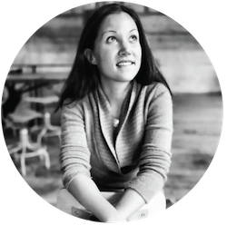
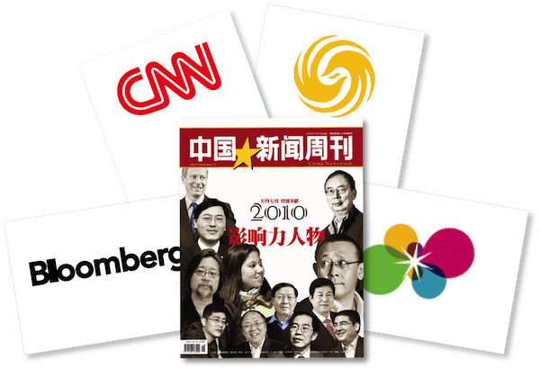

Hello, I'm Casey.
I'm a social entrepreneur from Oakland, CA.

I recently returned to the Bay Area from Beijing, where I founded China's first person-to-person microfinance non-profit, called Wokai. Over 5 years, I led the organization from an idea to a live platform with 3,000 contributors financing around 1,000 rural poor to start their own businesses. I led a passionate core team of 7 in Beijing as well as 350 volunteers in our 20 Chapter cities in Asia and North America. Over the course of my time with Wokai as well as my personal dabblings, I've developed a strong skillset in the following areas:
I love stories and the creativity of building the face of an organization. At Wokai, I led every stage of branding, PR, and communications from our initial concept, brand and messaging strategy to media relations, interviews, and countless presentations to audiences small and large.
I'm fascinated by how clusters of people come together to achieve audacious goals. A few areas that I've worked on in this vein are: management, leadership, process, strategic planning, purpose, and goal setting, values alignment, due-diligence, and capacity building.
I've consumed way more caffeine than my doctor would like over the past decade meeting with funders, advisors, partners, government, and media. I love collaborating with external stakeholders to find common synergies and ways that we can work together to expand the pie.
In addition to leading product efforts for 4 years at Wokai, I'm currently studying user-experience, graphic design, and front-end coding. My first solo project was this website (I'd greatly appreciate any feedback you have on how it can be improved!).
Through my efforts with Wokai, I was lucky enough to be recognized as the Most Influential Foreigner in China in 2010 by China Newsweek and one of the 100 highest potential social entrepreneurs in Asia under 30 by the Foundation for Youth Social Entrepreneurship in 2009.
Here are some links to interviews in CNN, CBS, Bloomberg, and Phoenix TV where you can see me evangelizing Wokai in English and Chinese.
